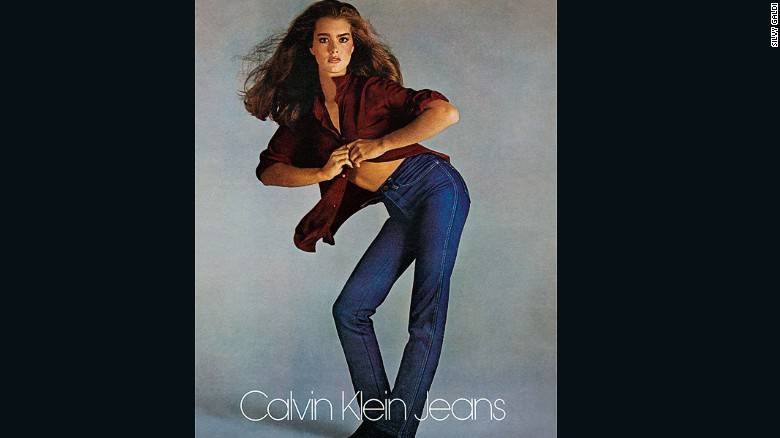

Calvin Klein on why sex still sells ... and the power of Justin Bieber
It may be 13 years since Calvin Klein left the fashion house he founded, but the brand is still using his sex sells advertising ethos.
With one difference. They've added a hashtag. In 2014, the brand launched its #mycalvins campaign. Enlisted were some of the world's most relevant and influential celebrities: Canadian singer Justin Bieber, model and reality TV star Kendall Jenner, rapper Kendrick Lamar, and hip hop star Fetty Wap, to name a few.
They were instructed to post pictures of themselves in Calvin Klein underwear, with the caption "I ___ in #mycalvin." Something suggestive normally filled in the blank. "I think the Justin Bieber thing is brilliant," Calvin Klein, 73, tells CNN Talk Asia. "He's right on. Perfect for now. And Kendall Jenner has a huge following."
